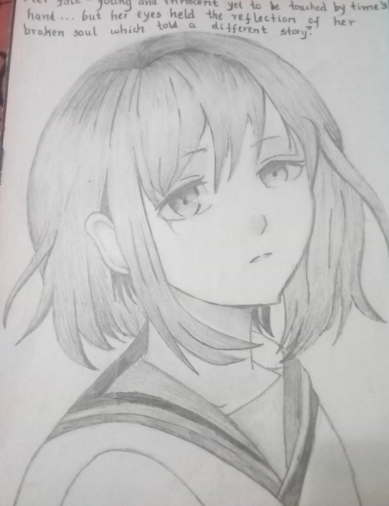

My passion for splashing colors on plain white canvas and turning it into something meaningful is as old as me. Though my work are not really "Bob Ross" level, I try :'). Do have a look at one of my pencil works
Reading novels, philosophy and interpretation of old victorian novels is something I love to do. Literature has been a constant companion since a very long time. I read books and write my opinions and views on the books and sometimes hold a small research on famous books and how they impacted the culture and society at the time. Besides reading, I am also an aspiring young writer. I am also part of the Editorial Board as an editor at my college. I will soon be adding the link to my blog. Do visit and check out my works!
I am a trained bharatnatyam dancer (though it's been too long since I practiced) but I also enjoy some freestyle and contemporary dancing every once in a while